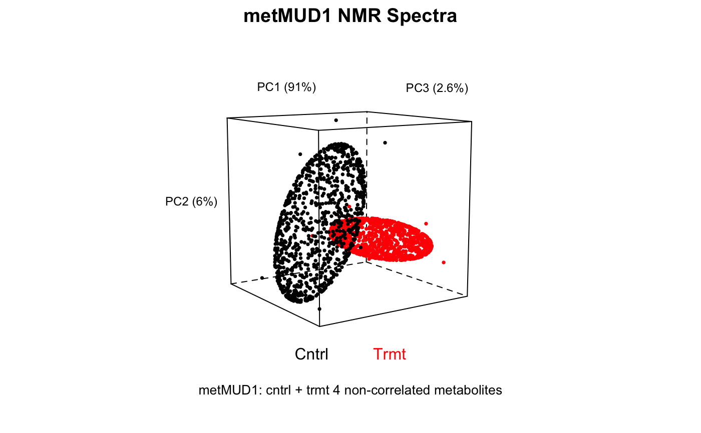

Creates a basic 3D plot of PCA scores from the analysis of a
Spectra object, color coded according the to scheme stored in
the object.
plotScores3D(spectra, pca, pcs = c(1:3), ellipse = TRUE, rob = FALSE, cl = 0.95, frac.pts.used = 0.8, view = list(y = 34, x = 10, z = 0), tol = 0.01, use.sym = FALSE, ...)
| spectra | An object of S3 class |
|---|---|
| pca | An object of class |
| pcs | A vector of three integers specifying the PCA scores to plot. |
| ellipse | Logical indicating if confidence ellipses should be drawn. |
| rob | Logical; if |
| cl | A number indicating the confidence interval for the ellipse. |
| frac.pts.used | If |
| view | A list of viewing transformations to be applied to the data.
May contain values for x, y and z axes; keep in mind that the order of the
transformations is important. For example, specifying |
| tol | Quantile to be used to label extreme data points. Currently not used - need to fix the code! |
| use.sym | logical; if true, the color scheme is change to black and symbols are used for plotting. |
| … | Other parameters to be passed downstream. |
None. Side effect is a plot.
For a 2D plot of the scores, see plotScores. For
interactive 3D plots, use plotScoresRGL. Additional documentation
at https://bryanhanson.github.io/ChemoSpec/
data(metMUD1) pca <- c_pcaSpectra(metMUD1, choice = "noscale") plotScores3D(metMUD1, pca, main = "metMUD1 NMR Spectra")